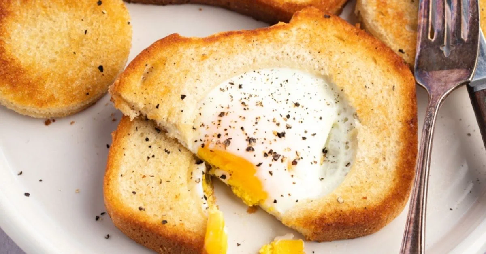

Eggs in a Basket

Description
Try this eggs in a basket recipe if you need a quick and tasty breakfast. It’s super easy, and I love that you can dip the extra bread in the gooey yolk!
I’ve already been through a whole post of fantastic toast recipes, but I felt like this one deserved one of its own.
Ingredients
- 1 egg
- 1 peice bread
- 1/2 tablespoon butter
- salt and pepper, to taste
Steps
- Cut a circle in the center of the bread using a round cookie cutter or the top of a glass.
- Grease a skillet or griddle with non-stick spray or butter and preheat to medium-low.
- Place the bread in the skillet and put the butter in the bread hole. Cook until the butter melts.
- Crack the egg into the bread hole and season with salt and pepper. Cover the pan and cook until the egg white is fairly set. Flip the bread over, careful not to break the yolk. Cook to your preferred level of doneness.
- Toast the cut-out bread round and serve on top of the dish. Enjoy!